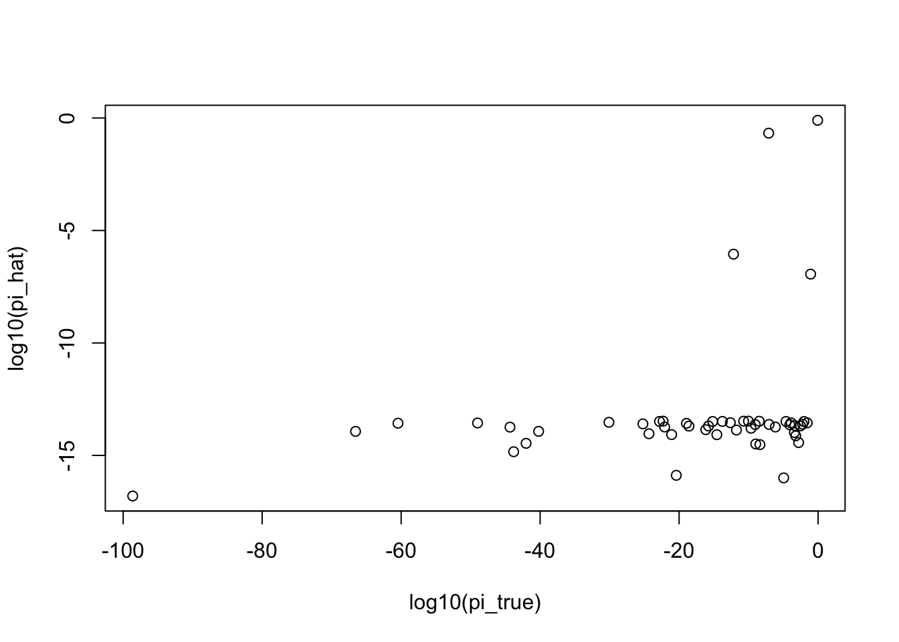

ebpm_demo
zihao12
2019-09-23
Last updated: 2019-09-26
Checks: 7 0
Knit directory: ebpmf/
This reproducible R Markdown analysis was created with workflowr (version 1.4.0). The Checks tab describes the reproducibility checks that were applied when the results were created. The Past versions tab lists the development history.
Great! Since the R Markdown file has been committed to the Git repository, you know the exact version of the code that produced these results.
Great job! The global environment was empty. Objects defined in the global environment can affect the analysis in your R Markdown file in unknown ways. For reproduciblity it’s best to always run the code in an empty environment.
The command set.seed(20190923) was run prior to running the code in the R Markdown file. Setting a seed ensures that any results that rely on randomness, e.g. subsampling or permutations, are reproducible.
Great job! Recording the operating system, R version, and package versions is critical for reproducibility.
Nice! There were no cached chunks for this analysis, so you can be confident that you successfully produced the results during this run.
Great job! Using relative paths to the files within your workflowr project makes it easier to run your code on other machines.
Great! You are using Git for version control. Tracking code development and connecting the code version to the results is critical for reproducibility. The version displayed above was the version of the Git repository at the time these results were generated.
Note that you need to be careful to ensure that all relevant files for the analysis have been committed to Git prior to generating the results (you can use wflow_publish or wflow_git_commit). workflowr only checks the R Markdown file, but you know if there are other scripts or data files that it depends on. Below is the status of the Git repository when the results were generated:
Ignored files:
Ignored: .Rhistory
Ignored: .Rproj.user/
Untracked files:
Untracked: analysis/ebpmf_demo.Rmd
Note that any generated files, e.g. HTML, png, CSS, etc., are not included in this status report because it is ok for generated content to have uncommitted changes.
These are the previous versions of the R Markdown and HTML files. If you’ve configured a remote Git repository (see ?wflow_git_remote), click on the hyperlinks in the table below to view them.
| File | Version | Author | Date | Message |
|---|---|---|---|---|
| Rmd | 4f11a65 | zihao12 | 2019-09-26 | rewrite demo for ebpm |
| html | 9a58a35 | zihao12 | 2019-09-26 | Build site. |
| Rmd | 6d71395 | zihao12 | 2019-09-26 | rewrite demo for ebpm |
| html | a3da36f | zihao12 | 2019-09-24 | Build site. |
| Rmd | 731df2d | zihao12 | 2019-09-24 | update deno |
| html | aa84714 | zihao12 | 2019-09-24 | Build site. |
| Rmd | c1164b4 | zihao12 | 2019-09-24 | demo ebpm update grid range |
| html | 25f8b5a | zihao12 | 2019-09-24 | Build site. |
| Rmd | a92d9ab | zihao12 | 2019-09-24 | demo ebpm update grid range |
| html | 06d1f33 | zihao12 | 2019-09-24 | Build site. |
| Rmd | 5e5f539 | zihao12 | 2019-09-24 | demo ebpm update |
| html | 9e28fe2 | zihao12 | 2019-09-23 | Build site. |
| Rmd | fdb63ad | zihao12 | 2019-09-23 | demo ebpm |
EBPM problem
\[ \begin{align} & x_i \sim Pois(s_i \lambda_i)\\ & \lambda_i \sim g(.)\\ & g \in \mathcal{G} \end{align} \] Our goal is to estimate \(\hat{g}\) (MLE), then compute posterior \(p(\lambda_i | x_i, \hat{g})\). Here I use mixture of exponential as prior family.
see detail in https://www.overleaf.com/project/5bd084d90a33772e7a7f99a2
library(mixsqp)
library(ggplot2)Warning: package 'ggplot2' was built under R version 3.5.2library(gtools)
require(gridExtra)Loading required package: gridExtraEBPM-exponential-mixture
- For now, I use mixture of exponential as prior family.
- Under the exponential case, we discuss how to select the range of the grid (of \(\mu\), exponential mean). For convenience we use \(exp(\mu)\) to denote exponential distribution with mean \(\mu\):
The goal is: for each observation, we want to include the range of \(\lambda\) “of interest” (i.e. \(log \ p(x | \lambda)\) is close to that of the MLE, like within \(log(0.1)\)). If \(x = 0\), \(\ell(\lambda) = - \lambda s\), in order to have a good likelihood, we want the model to be able to choose \(\lambda \sim o(\frac{1}{s})\). Therefore, we want the smallest \(\mu\) to be in the order of \(o(\frac{1}{s})\) if there is 0 count.
If \(x > 0\), the MLE would be \(\frac{x}{s}\), and \(\lambda\) too small would have bad likelihood. So we want the biggest \(\mu\) to be of order \(O(max(\frac{x}{s}))\)
experiment setup
- I simulate \(\lambda_i \sim \sum_k \pi_k exp(b_k), k = 1, ..., 50\), where \(b_k\) is the exponential rate, for \(i = 1, ..., 4000\).
- Then I fit EBPM with mixture of exponential as prior (our model knows the grid for \(b_k\)). I compare \(\ell(\pi)\), which should be better than oracle; I also compare \(\ell(\lambda)\) (it is not clear whether the posterior will be better than oracle, but still we can use it to see how good the model is).
- Then I fit with the same model, without knowing the grid for \(b_k\).
## ===========================================================================
## ==========================ebpm_exponential_mixture=========================
## ===========================================================================
## description
## this solves ebpm problem, with mixture of exponential distribution as prior:
## g(.) = \sum_k \pi_k exp(.;b_k), where b_k is rate of exponential
## generate a geometric sequence: x_n = low*m^{n-1} up to x_n < up
geom_seq <- function(low, up, m){
N = ceiling(log(up/low)/log(m)) + 1
out = low*m^(seq(1,N, by = 1)-1)
return(out)
}
lin_seq <- function(low, up, m){
out = seq(low, up, length.out = m)
return(out)
}
## select grid for b_k
select_grid_exponential <- function(x, s, m = 2){
## mu_grid: mu = 1/b is the exponential mean
xprime = x
xprime[x == 0] = xprime[x == 0] + 1
mu_grid_min = 0.05*min(xprime/s)
mu_grid_max = 2*max(x/s)
mu_grid = geom_seq(mu_grid_min, mu_grid_max, m)
#mu_grid = lin_seq(mu_grid_min, mu_grid_max, m)
b = 1/mu_grid
a = rep(1, length(b))
return(list(a= a, b = b))
}
## compute L matrix from data and selected grid
## L_ik = (s_i^x_i* b_k)/(s_i + b_k)^(x_i + 1)
compute_L <- function(x, s, a, b){
prob = 1 - s/outer(s,b, "+")
L = dnbinom(x,a,prob = prob, log = F)
return(L)
}
## compute ebpm_exponential_mixture problem
ebpm_exponential_mixture <- function(x,s,m = 2, grid = NULL, seed = 123){
set.seed(seed)
if(is.null(grid)){grid <- select_grid_exponential(x,s,m)}
b = grid$b
a = grid$a
L <- compute_L(x,s,a, b)
fit <- mixsqp(L, control = list(verbose = F))
ll_pi = - (fit$value) * length(x) ## get ll(pi) from mixsqr obj
pi = fit$x
cpm = outer(x,a)/outer(s, b)
lam_pm = cpm %*% pi
ll_lam = sum(dpois(x, s*lam_pm, log = T))
return(list(pi = pi, lam_pm = lam_pm, ll_lam = ll_lam,ll_pi = ll_pi,L = L,grid = grid))
}
## ===========================================================================
## ==========================experiment setup=================================
## ===========================================================================
## sample from mixture of gamm distribution
sim_mgamma <- function(a,b,pi){
idx = which(rmultinom(1,1,pi) == 1)
return(rgamma(1, shape = a[idx], rate = b[idx]))
}
## simulate a poisson mean problem
simulate_pm <- function(seed = 123){
set.seed(seed)
n = 4000 ## number of data
d = 50 ## number of mixture components in prior
## simulate grid
a = replicate(d,1)
b = 10*runif(d)
grid = list(a = a, b = b)
pi <- rdirichlet(1,rep(1/d, d))
lam_true = replicate(n, sim_mgamma(a,b,pi))
s = replicate(length(lam_true), 10)
#s = 2*runif(length(lam_true))
x = rpois(length(lam_true),s*lam_true)
ll_lam = sum(dpois(x, s*lam_true, log = T))
L = compute_L(x,s,a,b)
ll_pi = sum(log(L %*% matrix(pi, ncol = 1)))
return(list(x = x, s = s, lam_true = lam_true, pi = pi, grid = grid, ll_lam = ll_lam, ll_pi = ll_pi))
}## test functions above
main <- function(know_grid = F){
m = 1.1
sim = simulate_pm()
x = sim$x
s = sim$s
lam_true = sim$lam_true
start = proc.time()
if(!know_grid){
fit = ebpm_exponential_mixture(x, s, m)
}else{
fit = ebpm_exponential_mixture(x, s, m, sim$grid)
}
runtime = proc.time() - start
print(sprintf("fit with %d data points and %d grid points", length(sim$x),length(fit$grid$b)))
print(sprintf("runtime: %f", runtime[[3]]))
print("\n")
print("log likelihood for pi:")
print(sprintf("oracle ll_pi: %f", sim$ll_pi))
print(sprintf("fitted ll_pi: %f", fit$ll_pi))
print("\n")
print("log likelihood for lam:")
print(sprintf("mle ll_lam: %f", sum(dpois(x, x, log = T))))
print(sprintf("oracle ll_lam: %f", sim$ll_lam))
print(sprintf("fitted ll_lam: %f", fit$ll_lam))
df = data.frame(n = 1:length(x), x = x, s = s, lam_true = lam_true, lam_hat = fit$lam_pm)
plot1 <- ggplot(df) + geom_point(aes(x = x/s, y = lam_hat, color = "blue"), cex = 0.5) +
labs(x = "x/s", y = "lam_hat", title = "EBPM") +
guides(fill = "color")
plot2 <- ggplot(df) + geom_point(aes(x = lam_true, y = lam_hat, color = "blue"), cex = 0.5) +
labs(x = "lam_true", y = "lam_hat", title = "EBPM") +
guides(fill = "color")
grid.arrange(plot1, plot2, ncol=1)
return(list(fit = fit, sim = sim))
}fit (knowing grid)
out1 = main(know_grid = T)[1] "fit with 4000 data points and 50 grid points"
[1] "runtime: 0.127000"
[1] "\n"
[1] "log likelihood for pi:"
[1] "oracle ll_pi: -6154.499159"
[1] "fitted ll_pi: -6153.161922"
[1] "\n"
[1] "log likelihood for lam:"
[1] "mle ll_lam: -2807.351047"
[1] "oracle ll_lam: -4785.537170"
[1] "fitted ll_lam: -8811.940157"
plot(log10(out1$sim$pi), log10(out1$fit$pi), ylab = "log10(pi_hat)", xlab = "log10(pi_true)")
hist(out1$sim$grid$b, breaks = 100, xlab = "b_true", main = "histogram of b_true")
| Version | Author | Date |
|---|---|---|
| 9a58a35 | zihao12 | 2019-09-26 |
fit (not knowing grid)
out2 = main(know_grid = F)[1] "fit with 4000 data points and 67 grid points"
[1] "runtime: 0.170000"
[1] "\n"
[1] "log likelihood for pi:"
[1] "oracle ll_pi: -6154.499159"
[1] "fitted ll_pi: -6153.168083"
[1] "\n"
[1] "log likelihood for lam:"
[1] "mle ll_lam: -2807.351047"
[1] "oracle ll_lam: -4785.537170"
[1] "fitted ll_lam: -8811.600827"
hist(out2$sim$grid$b, breaks = 100, xlab = "b_true", main = "histogram of b_true")
| Version | Author | Date |
|---|---|---|
| 9a58a35 | zihao12 | 2019-09-26 |
hist(out2$fit$grid$b, breaks = 100, xlab = "b_hat", main = "histogram of b_hat")
| Version | Author | Date |
|---|---|---|
| 9a58a35 | zihao12 | 2019-09-26 |
hist(out2$sim$pi, breaks = 100, xlab = "pi_true", main = "histogram of pi_true")
| Version | Author | Date |
|---|---|---|
| 9a58a35 | zihao12 | 2019-09-26 |
hist(out2$fit$pi, breaks = 100, xlab = "pi_hat", main = "histogram of pi_hat")
| Version | Author | Date |
|---|---|---|
| 9a58a35 | zihao12 | 2019-09-26 |
compare two experiment result
plot(out1$fit$lam_pm, out2$fit$lam_pm, xlab = "lam_post (use oracle grid)", ylab = "lam_post (use selected grid)", main = "posterior mean for lambda")
Conclusion
- Our grid selecting seems to work fine, as the posterior mean of \(\lambda\)s are almost the same between the two experiments (use oracle grid VS estimate grid)
- \(\ell(\pi_{est})\) is slightly better than \(\ell(\pi_{true})\)
- It is suspicious that \(\ell(\lambda_{post})\) is so much worse than oracle
sessionInfo()R version 3.5.1 (2018-07-02)
Platform: x86_64-apple-darwin15.6.0 (64-bit)
Running under: macOS 10.14
Matrix products: default
BLAS: /Library/Frameworks/R.framework/Versions/3.5/Resources/lib/libRblas.0.dylib
LAPACK: /Library/Frameworks/R.framework/Versions/3.5/Resources/lib/libRlapack.dylib
locale:
[1] en_US.UTF-8/en_US.UTF-8/en_US.UTF-8/C/en_US.UTF-8/en_US.UTF-8
attached base packages:
[1] stats graphics grDevices utils datasets methods base
other attached packages:
[1] gridExtra_2.3 gtools_3.8.1 ggplot2_3.2.0 mixsqp_0.1-120
loaded via a namespace (and not attached):
[1] Rcpp_1.0.2 compiler_3.5.1 pillar_1.4.1 git2r_0.25.2
[5] workflowr_1.4.0 tools_3.5.1 digest_0.6.19 evaluate_0.14
[9] tibble_2.1.3 gtable_0.3.0 pkgconfig_2.0.2 rlang_0.4.0
[13] yaml_2.2.0 xfun_0.8 withr_2.1.2 stringr_1.4.0
[17] dplyr_0.8.1 knitr_1.25 fs_1.3.1 rprojroot_1.3-2
[21] grid_3.5.1 tidyselect_0.2.5 glue_1.3.1 R6_2.4.0
[25] rmarkdown_1.13 purrr_0.3.2 magrittr_1.5 whisker_0.3-2
[29] backports_1.1.4 scales_1.0.0 htmltools_0.3.6 assertthat_0.2.1
[33] colorspace_1.4-1 labeling_0.3 stringi_1.4.3 lazyeval_0.2.2
[37] munsell_0.5.0 crayon_1.3.4